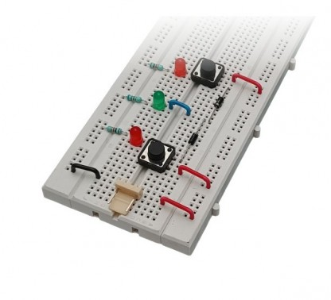
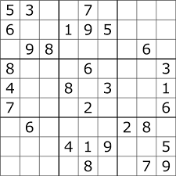
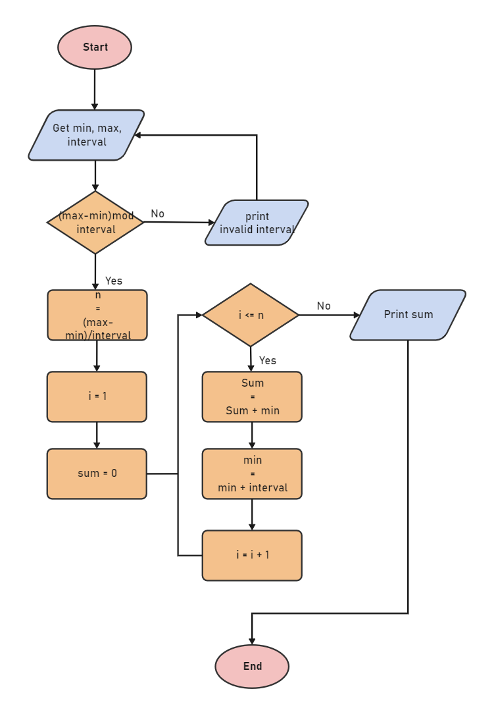

Project 1 - Logical Or-gate
An OR gate is a digital logic gate that gives an output of 1 when any of its inputs are 1, otherwise 0. An OR gate performs like two switches in parallel supplying a light, so that when either of the switches is closed the light is on.
Project 2 - Sudoku
In its simplest and most common configuration, sudoku consists of a 9 x 9 grid with numbers appearing in some of the squares. The object of the puzzle is to fill the remaining squares, using all the numbers 1-9 exactly once in each row, column, and the nine 3 x 3 subgrids.
Project 3 - Algorithm
An algorithm is a procedure used for solving a problem or performing a computation. Algorithms act as an exact list of instructions that conduct specified actions step by step in either hardware- or software-based routines. Algorithms are widely used throughout all areas of IT.